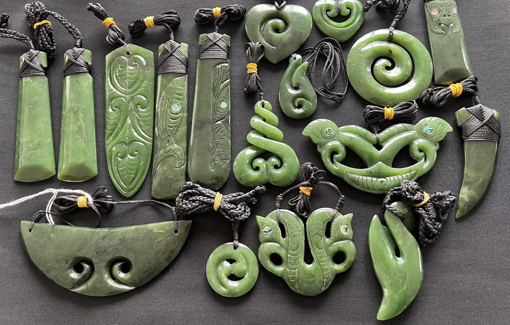
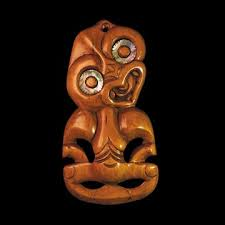
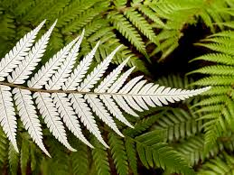

Symbols and iteams with cultural significance

New Zealand greenstone, is a nephrite jade that is found only in the South Island. For Māori, pounamu is considered a sacred taonga (treasure), possessing spiritual properties. It is primarily used for making tools and weapons and creating important pendants often in the shapes of many of the follwing symbols
Whakairo, a Māori art form, involves intricately carved designs from wood bone and stones. It holds deep ancestral and symbolic significance, predominantly found in meeting houses (wharenui), canoes (waka), weaponry and sacred items. Each whakairo piece tells a story of genealogical connections beliefs and links to the past, reflecting the individual’s identity status and tribal heritage. Tohunga whakairo, meaning masters of whakairo, diligently preserve this practice across generations.

The silver fern (ponga) is the best-known symbol of Aotearoa New Zealand. Known for its distinct green fronds with their beautiful silvery undersides, the fern has been used by Māori to guide hunters through the bush and as the logo of legendary sports teams the all blacks.

In Māori culture, a fish hook pendant is known as a Hei Matau. It symbolizes strength, good luck, prosperity, and safe travel—particularly over water.. It comes from the legend of a demigod Māui (famously known from the movie Moana) . He uses his magical fish hook to pull New Zealand's north island . The Hei Matau connects the weather to the ocean. It traditionally represents guardianships,determination and a provider for the family.

Experince the Culture

Te Pā Tū is an award-winning Māori cultural experience in Rotorua, New Zealand, offering an immersive evening of storytelling, performance, and seasonal cuisine. Set within a forest village, guests are welcomed into the rich traditions of Māori culture through ceremonial rituals, interactive experiences, captivating haka and waiata performances, and a feast inspired by traditional hāngī cooking and local ingredients. Designed around the Māori lunar calendar, each seasonal experience provides a unique insight into the history, values, and living culture of Aotearoa